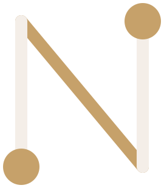

Site simples
Para quem está começando ou quer uma presença clara e direta. Poucas imagens, pouco movimento e tudo o que o cliente precisa saber.
Prazo médio de criação3 a 4 dias
Criação de sites
Sites sob medida, desenhados primeiro para o celular. E, quando fizer sentido, automação, planilhas, agenda e sistemas para organizar a rotina por trás deles.
Conversa pelo WhatsApp, sem compromisso.
Clientes satisfeitos, trabalho bem feito e nenhum lugar que mostre isso. Quem chega pelo Instagram ou por indicação procura um endereço que explique o que você faz e facilite o contato. É isso que o NEXO cria.
Foco principal
Feito sob medida e desenhado primeiro para o celular, porque é por ele que a maior parte das visitas chega.
Abre rápido e funciona bem no celularDo Instagram para o seu site em um toque, com tudo no lugar.
Contato sempre à vistaO botão para falar com você aparece em toda a página.
Um endereço com o seu nomeQue também pode aparecer para quem pesquisa fora das redes sociais.
O link da bio passa a ser o seu endereço.
Para quem está começando ou quer uma presença clara e direta. Poucas imagens, pouco movimento e tudo o que o cliente precisa saber.
Mais imagens, vídeos curtos e algumas animações para dar vida à página, sem perder a leveza.
Para produtos e marcas que querem impressionar: vídeos, movimento e efeito 3D que acompanha a rolagem da página.
Os formatos são um ponto de partida. Todo site é desenhado para o negócio de quem contrata.
Exemplos
Alguns segundos de cada um, do jeito que aparecem na tela. São marcas fictícias, criadas para mostrar o que cada formato entrega.
Site com animação e 3D
Um toca-discos apresentado como filme: a câmera percorre cada peça conforme a pessoa rola a página.
Site intermediário
Ateliê de cerâmica com vitrine das peças, história do ateliê, aulas e encomenda direto pelo site.
Serviços de apoio
O site é a parte do negócio que o cliente vê. Automação, organização e sistemas cuidam da parte que só a equipe vê.
Tarefas repetitivas passam a acontecer sozinhas: avisos, envios, preenchimentos e ligações entre as ferramentas que você já usa.
“Seus lembretes passam a ser enviados sozinhos. Você não precisa mais fazer isso à mão.”
Automatizar minha rotinaPlanilhas limpas e fáceis de manter. Agenda estruturada para que nenhum compromisso se perca.
“A planilha que só uma pessoa entendia fica simples para toda a equipe.”
Organizar planilhas e agendaQuando a planilha já não resolve: cadastros, controles e rotinas internas reunidos em um sistema feito para o seu negócio.
“Os controles que hoje estão espalhados em várias planilhas ficam num lugar só.”
Criar meu sistemaPara quem
Consultores, freelancers e prestadores que precisam ser encontrados e passar confiança sozinhos.
Agências, escritórios e empresas com 2 a 10 pessoas na operação.
Negócios que estão crescendo e precisam se estruturar antes que a rotina vire caos.
Como funciona
Entendemos como você trabalha e o que o site precisa mostrar.
Você recebe uma proposta sob medida, com o site em primeiro lugar.
Montamos a primeira versão e ajustamos com você até a aprovação.
Publicamos, e o link da bio passa a ser o seu endereço.
Um site que apresenta bem o seu trabalho, funciona no celular e facilita o contato.
Número de clientes ou posição no Google. Preferimos combinar o que depende de nós.

Conte como você trabalha e o que o site precisa mostrar. A conversa é pelo WhatsApp e sem compromisso.